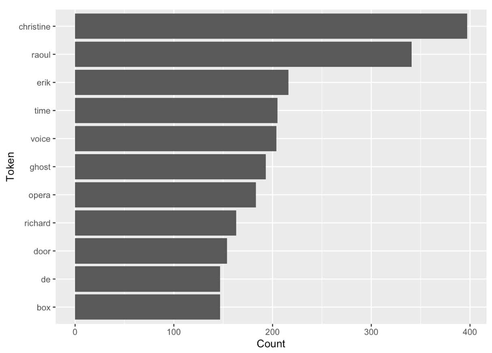
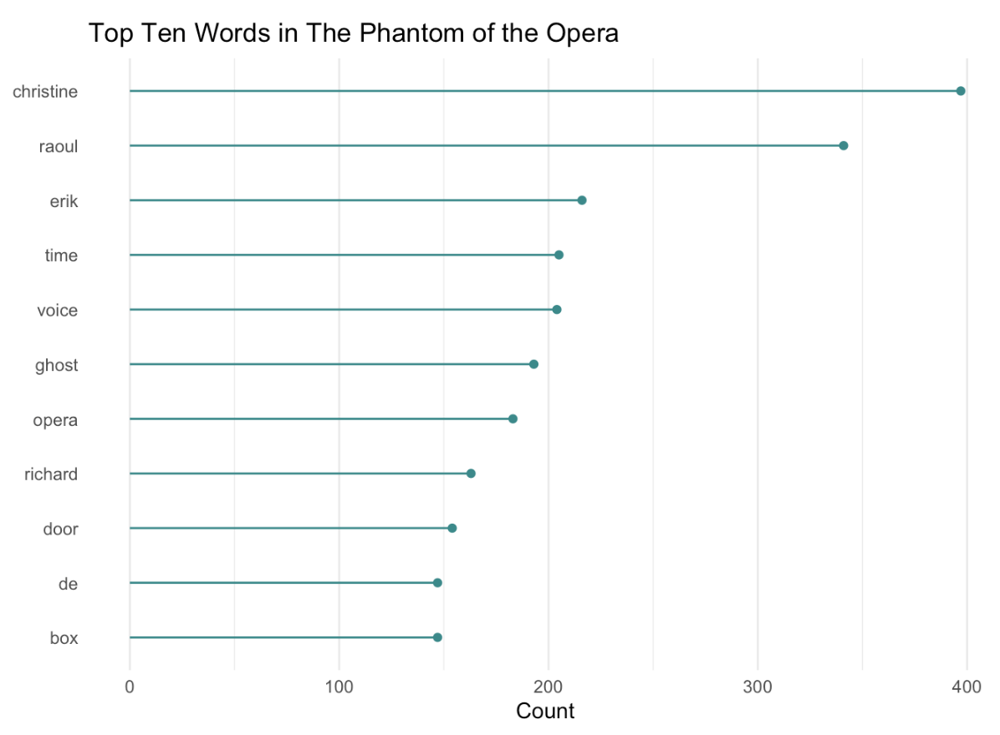
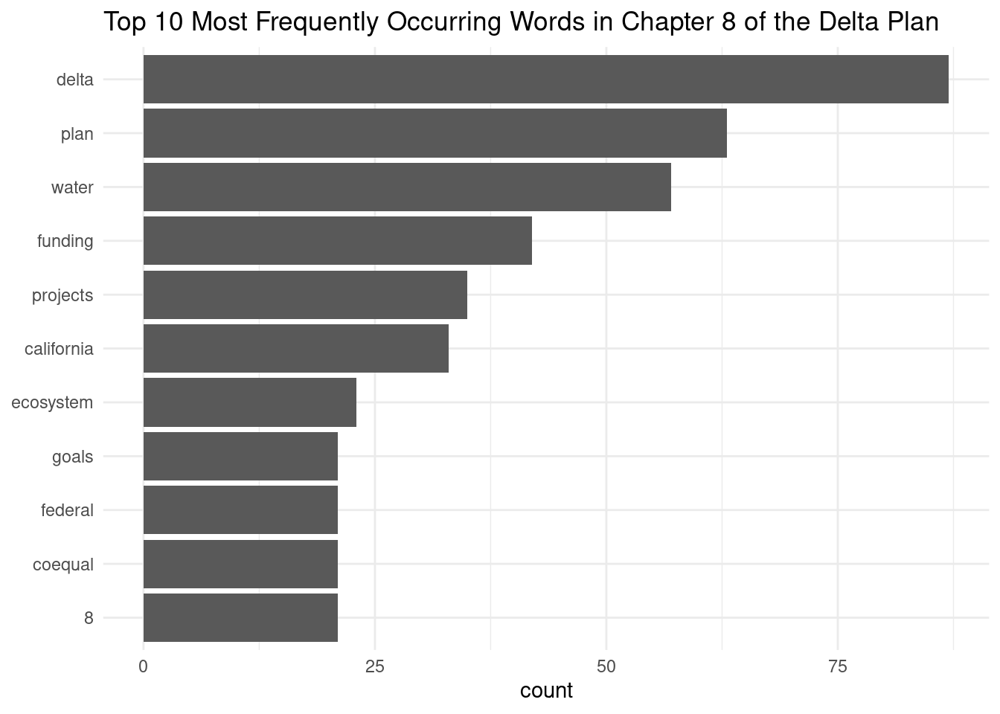
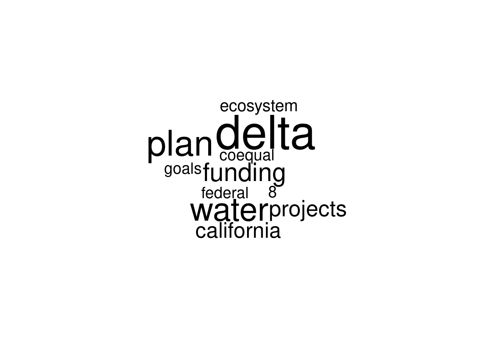

library(gutenbergr) # access public domain texts from Project Gutenberg
library(tidytext) # text mining using tidy tools
library(dplyr) # wrangle data
library(ggplot2) # plot dataLearning Objectives
- Describe principles of tidy text data
- Employ strategies to wrangle unstructured text data into a tidy text format using the
tidytextpackage - Become familiar non-tidy text formats and how to convert between tidy text and non-tidy text formats
- Become familiar with text analysis (or text mining) methods and when to use them
Acknowledgements
This lesson has been adapted from the following resources:
- Welcome to Text Mining with R by Julia Silge and David Robinson. Julia and David are also the developers of the
tidytextpackage. - Section 7.3: (R-) Workflow for Text Analysis from Computational Social Science: Theory & Application, Version: 17 June, 2021 by Paul C. Bauer
12.1 What is text data?
Text data is information stored as character or string data types. It comes in various different forms including books, research articles, social media posts, interview transcripts, newspapers, government reports, and much more.
12.1.1 How do we talk about text data?
Here is a list of text data or text analysis terms we’ll be referring to throughout this lesson. Note this is not a comprehensive list of text analysis terms that are used beyond this lesson.
| Term | Definition |
|---|---|
| Corpus (corpora, plural) | Collection or database of text or multiple texts. These types of objects typically contain raw strings annotated with additional metadata and details. |
| Document-feature matrix (DFM) | Represents the relationship between features and documents, where each row is a document and each column corresponds to a set of features. Features are not limited to terms and can include a variety of attributes that describe the documents. Each cell in the matrix contains a value that represents the presence, absence, or some quantitative measure of a specific feature in a particular document. |
| Document-term matrix (DTM) | Represents the relationship between terms and documents, where each row stands for a document and each column represents a term, and an entry is the number of occurrences of the term in the document. |
| Natural Language Processing (NLP) | NLP is an interdisciplinary field used in computer science, data science, linguistics, and others to analyze, categorize, and work with computerized text. |
| Sparse matrix | A matrix where the majority of the entries are zero. Both DFM and DTM are sparse matrices and this is normal. Typically, the bigger the DTM or DFM, the more zeros you’ll see. |
| String | Specific type of data whose values are enclosed within a set of quotes. Typically values or elements are characters (e.g. “Hello World!”). |
| Text analysis | The process of deriving high-quality information or patterns from text through evaluation and interpretation of the output. Also referred to as “text mining” or “text analytics”. |
| Token | A meaningful unit of text, such as a word, to use for analysis. |
| Tokenization | The process of splitting text into tokens. |
12.1.2 How is text data used in the environmental field?
As our knowledge about the environmental world grows, researchers will need new computational approaches for working with text data because reading and identifying all the relevant literature for literature syntheses is becoming an increasingly difficult task.
Beyond literature syntheses, quantitative text analysis tools are extremely valuable for efficiently extracting information from texts and other text mining or text analysis tasks.
12.2 What is tidy text data?
Let’s recall the tidy data principles:
- Every column is a variable.
- Every row is an observation.
- Every cell is a single value.
Keeping that in mind, Silge and Robinson define the tidy text format as being a table with one-token-per-row.
This one-token-per-row structure is in contrast to the ways text is often stored in current analyses, perhaps as strings or in a document-term matrix.
For tidy text mining, the token that is stored in each row is most often a single word, but can also be an n-gram, sentence, or paragraph.
By using tidy data principles, we can apply many “tidy” R packages including dpylr, tidyr, ggplot2, and more.
12.2.1 What is the tidytext R package?

tidytext is a package that applies the tidy principles to analyzing text.
The package contains many useful functions to wrangle text data into tidy formats. It has been built considering other text mining R packages so that it’s easy to switch between text mining tools (e.g. tm, quanteda, stringr, wordcloud2).
12.3 Exercise: Tidy Text Workflow

We are going to use the gutenbergr package to access public domain texts from Project Gutenberg (a library of free eBooks). We’ll then use the tidytext, dyplr and ggplot2 packages to practice the tidy text workflow.
Setup
Create a new
qmdfile and title it “Intro to Text Data”, name yourself as the author, and then save the file asintro-text-data.qmd.Create a new code chunk and attach the following libraries:
- Depending on which group you’re in, use one of the following public domain texts:
# Group A
gutenberg_works(title == "Dracula") # dracula text
# Group B
gutenberg_works(title == "Frankenstein; Or, The Modern Prometheus") # frankenstein text
# Group C
gutenberg_works(title == "The Strange Case of Dr. Jekyll and Mr. Hyde") # jekyll hyde text12.3.1 Questions
The answers in the code chunks are using the text of The Phantom of the Opera.
Question 1
Get the id number from the gutenberg_works() function so that you can download the text as a corpus using the function gutenberg_download(). Save the corpus to an object called {book-title}_corp. View the object - is the data in a tidy format?
Answer
# get id number
gutenberg_works(title == "The Phantom of the Opera")
# access text data using id number from `gutenberg_works()`
phantom_corp <- gutenberg_download(175)
Question 2
Tokenize the corpus data using unnest_tokens(). Take a look at the data - do we need every single token for our analysis?
Answer
# tidy text data - unnest and remove stop words
tidy_phantom <- phantom_corp %>%
unnest_tokens(word, text)
Question 3
Remove “stop words” or words that can be safely removed or ignored without sacrificing the meaning of the sentence (e.g. “to”, “in”, “and”) using anti_join().
Take a look at the data - are you satisfied with your data? We won’t conduct any additional cleaning steps here, but consider how you would further clean the data.
Answer
# remove stop words
tidy_phantom <- tidy_phantom %>% dplyr::anti_join(stop_words, by = "word")
Question 4
Calculate the top 10 most frequent words using the functions count() and slice_max().
Answer
# calculate top 10 most frequent words
count_phantom <- tidy_phantom %>%
count(word) %>%
slice_max(n = 10, order_by = n)
Question 5
Plot the top 10 most frequent words using ggplot().
We recommend creating either a bar plot using geom_col() or a lollipop plot using both geom_point() and geom_segment().
Bar Plot Code
# bar plot
ggplot(data = count_phantom, aes(n, reorder(word, n))) +
geom_col() +
labs(x = "Count",
y = "Token")Step 8 Bar Plot

12.3.2 Bonus Question
Question 6
Consider elements in theme() and improve your plot.
Lollipop Plot Code
# initial lollipop plot
ggplot(data = count_phantom, aes(x=word, y=n)) +
geom_point() +
geom_segment(aes(x=word, xend=word, y=0, yend=n)) +
coord_flip() +
labs(x = "Token",
y = "Count")
# ascending order pretty lollipop plot
ggplot(data = count_phantom, aes(x=reorder(word, n), y=n)) +
geom_point(color="cyan4") +
geom_segment(aes(x=word, xend=word, y=0, yend=n), color="cyan4") +
coord_flip() +
labs(title = "Top Ten Words in The Phantom of the Opera",
x = NULL,
y = "Count") +
theme_minimal() +
theme(
panel.grid.major.y = element_blank()
)Step 9 Lollipop Plot

12.4 Tidy Text to Non-tidy Text Workflows

tidytext with other tools and data formats, particularly the tm or quanteda packages. Source: Silge & RobinsonIn the Tidy Text Workflow Exercise, we converted our corpus into a data table that has “one-token-per-row”. However, the tidy text format of one-token-per-row is not a common format for other R packages that work with text data or perform text analysis. Packages like tm, quanteda, topicmodels.
Many text analysis methods, in particular NLP techniques (e.g. topic models) require text data to be stored in a mathematical format. A common approach is to create a matrix, such as a: sparse matrix, a document term matrix (DTM), or a document-feature matrix (DFM). In a matrix format, algorithms are able to more easily compare one document to many other documents to identify patterns.
Silge and Robinson kept this in mind as they built the tidytext package, and included helpful cast() functions to turn a tidy text object (again a table with one-token-per-row) into a matrix.
12.4.1 Use cast() to Convert to a Matrix (Non-tidy) Format
In these examples, we’ll be using multiple books as our text: The Phantom of the Opera, The Strange Case of Dr. Jekyll and Mr. Hyde, Frankenstein; Or, The Modern Prometheus, and Dracula.
We’ll access these texts using gutenbergr’s gutenberg_download() function, and we’ll make sure to include the titles in the download.
# download corpus
all_books_corp <- gutenberg_download(c(175, # phantom of the opera
42, # jekyll & hyde
84, # frankenstein
345), # dracula
meta_fields = c("title"))This code chunk is formatting our corpus into the tidy text format, and it is counting the number of times each word occurs in each book.
# turn corpus into tidy text format
tidy_all_books <- all_books_corp %>%
unnest_tokens(output = word, # output col created
input = text # input col that is split
) %>%
count(title, word)This code chunk is converting our corpus of all books into a sparse matrix.
# convert tidy text table to sparse matrix from `Matrix` package
# requires `Matrix` to be installed
all_books_sparse <- tidy_all_books %>%
cast_sparse(row = title,
column = word,
value = n)This code chunk is converting our corpus of all books into a document-term matrix object from the tm package.
# convert tidy text table to DTM object from `tm` package
# requires `tm` to be installed
all_books_dtm <- tidy_all_books %>%
cast_dtm(term = word,
document = title,
value = n)This code chunk is converting our corpus of all books into a document-feature matrix object from the quanteda package.
# convert tidy text table to DFM object from `quanteda` package
# requires `quanteda` to be installed
all_books_dfm <- tidy_all_books %>%
cast_dfm(term = word,
document = title,
value = n)12.5 Exercise: Explore Unstructured Text Data from a PDF
Setup
In the
intro-text-data.qmdfile, create a new header for this exercise (e.g. “Explore Unstructured Text Data from a PDF”).Create a new code chunk and attach the following libraries:
library(tidytext) # tidy text tools
library(quanteda) # create a corpus
library(pdftools) # read in data
library(dplyr) # wrangle data
library(stringr) # string manipulation
library(ggplot2) # plots
library(wordcloud)- Depending on which group you’re in, read in one of the following chapters of the Delta Plan. Access and download the chapters of the Delta Plan from Delta Stewardship Council website.
Notes for quick exploration of data:
- Check the
class()of the pdf you just read in - is it what you expected? How does the object appear in the Global Environment? - Call the object in the Console. What does your data look like? What can you infer from how it’s structured?
# ch 3
path_df <- "data/dsc-plan-ch3.pdf"
dp_ch3 <- pdftools::pdf_text(path_df)
# ch 4
path_df <- "data/dsc-plan-ch4.pdf"
dp_ch4 <- pdftools::pdf_text(path_df)
# ch 5
path_df <- "data/dsc-plan-ch5.pdf"
dp_ch5 <- pdftools::pdf_text(path_df)
# ch 6
path_df <- "data/dsc-plan-ch6.pdf"
dp_ch6 <- pdftools::pdf_text(path_df)- Using the
quantedapackage, turn the unstructured pdf text data into a corpus.
Notes for quick exploration of data:
- Check the
class()of the corpus you created - is it what you expected? How does the object appear in the Global Environment? - Call the object in the Console. What does your data look like? How does this structure compare to the pdf object?
- Run
summary()of the corpus in the Console. What insights can you glean?
corpus_dp_ch <- quanteda::corpus(dp_ch)- Using
tidy()fromtidytext, make the corpus a tidy object.
Notes for quick exploration of data:
- Check the
class()of the corpus you created - is it what you expected? How does the object appear in the Global Environment? - Call the object in the Console or use
View(). What does your data look like? Is it what you expected?
tidy_dp_ch <- tidytext::tidy(corpus_dp_ch)12.5.1 Questions
Work independently or in groups for Question 1-5. The code solutions are based on the text data from Chapter 8 of the Delta Plan.
Question 1
Tokenize the tidy text data using unnest_tokens()
Answer
unnest_dp_ch8 <- tidy_dp_ch8 %>%
unnest_tokens(output = word,
input = text)
Question 2
Remove stop words using anti_join() and the stop_words data frame from tidytext.
Answer
words_dp_ch8 <- unnest_dp_ch8 %>%
dplyr::anti_join(stop_words)
Question 3
Calculate the top 10 most frequently occurring words. Consider using count() and slice_max().
Answer
count_dp_ch8 <- words_dp_ch8 %>%
count(word) %>%
slice_max(n = 10, order_by = n)
Question 4
Visualize the results using a plot of your choice (e.g. bar plot, lollipop plot, or wordcloud).
Plot Code
# bar plot
ggplot(count_dp_ch8, aes(x = reorder(word, n), y = n)) +
geom_col() +
coord_flip() +
labs(title = "Top 10 Most Frequently Occurring Words in Chapter 8 of the Delta Plan",
x = NULL,
y = "count") +
theme_minimal()
Plot Code
# lollipop plot
ggplot(data = count_dp_ch8, aes(x=reorder(word, n), y=n)) +
geom_point() +
geom_segment(aes(x=word, xend=word, y=0, yend=n)) +
coord_flip() +
labs(title = "Top 10 Most Frequently Occurring Words in Chapter 8 of the Delta Plan",
x = NULL,
y = "Count") +
theme_minimal()
Plot Code
# wordcloud
wordcloud(words = count_dp_ch8$word,
freq = count_dp_ch8$n)
12.5.2 Bonus Question
Question 5
What do you think of your plots? Are they helpful? Consider other techniques like adding custom stop words or stemming to improve your results.
12.6 Common Text Analysis and Text Mining Methods
The text analysis tools, methods, and packages depend greatly on your specific text analysis goals and the nature of your text data. You may end up only using one method or one package, or many in combination.
| Text Analysis Method | R Package | When to Use |
|---|---|---|
| Document-Term Matrix (DTM) | tm, quanteda, tm.plugin.webmining |
Represent text data as a matrix of word frequencies. |
| Named Entity Recognition (NER) | openNLP, spacyr, udpipe |
Identify entities like names, locations, etc. in text. |
| Sentiment Analysis | tidytext, sentimentr, syuzhet |
Determine sentiment (positive/negative) in text. |
| Stopword Removal | tm, quanteda, tidytext |
Remove common and irrelevant words. |
| Text Classification | caret, tm, quanteda |
Categorize text into predefined classes/categories. |
| Text Clustering | tm, text2vec, tm.plugin.clustering |
Group similar documents together. |
| Text Summarization | tm, textclean, textrank |
Condense the main points of a text into a summary. |
| TF-IDF | tm, tm.plugin.webmining, tidytext |
Measure word importance in a document corpus. |
| Tokenization | tm, quanteda, text2vec |
Split text into individual words/tokens. |
| Topic Modeling | tm, topicmodels, lda2vec |
Discover hidden topics in a collection of documents. |
| Word Embeddings | word2vec, text2vec, fastText |
Represent words as dense vectors for semantic analysis. |
| Dependency Parsing | udpipe, spaCy, openNLP |
Analyze grammatical structure and word dependencies. |
12.7 Note About Python and NLP
While both R and python are capable of natural language processing and other machine learning text analysis techniques, many claim there is an advantage to using python over R. Python has a vast amount of libraries and packages, and its libraries for machine learning (e.g. scikit-learn, TensorFlow, Keras) make it simple to build models from scratch (Note: packages like TensorFlow are being ported to R). Additionally, Python tends to run faster than R, which is why some may prefer to use python when working with large datasets.
However, both languages have a vast array of libraries and packages, and large, active communities to lean on for support.
It’s important to note that with tools like Jupyter Notebook and Quarto you’re not longer limited to just one language. With tools that support both R and python code, you have the capability to leverage the strengths of both languages. For example, you can build a NLP model using python and then create a visualization using R.
Farrell, Maxwell J., Liam Brierley, Anna Willoughby, Andrew Yates, and Nicole Mideo. 2022. “Past and Future Uses of Text Mining in Ecology and Evolution.” Proceedings of the Royal Society B: Biological Sciences 289 (1975). https://doi.org/10.1098/rspb.2021.2721.
Froehlich, Halley E., Rebecca R. Gentry, Michael B. Rust, Dietmar Grimm, and Benjamin S. Halpern. 2017. “Public Perceptions of Aquaculture: Evaluating Spatiotemporal Patterns of Sentiment Around the World.” Edited by Christopher M. Somers. PLOS ONE 12 (1): e0169281. https://doi.org/10.1371/journal.pone.0169281.
Van Houtan, Kyle S., Tyler Gagne, Clinton N. Jenkins, and Lucas Joppa. 2020. “Sentiment Analysis of Conservation Studies Captures Successes of Species Reintroductions.” Patterns 1 (1): 100005. https://doi.org/10.1016/j.patter.2020.100005.